Kagamino, Okayama: things to do, food and stays
Kagamino · Okayama
Kagamino
Highlighted on the Okayama map.
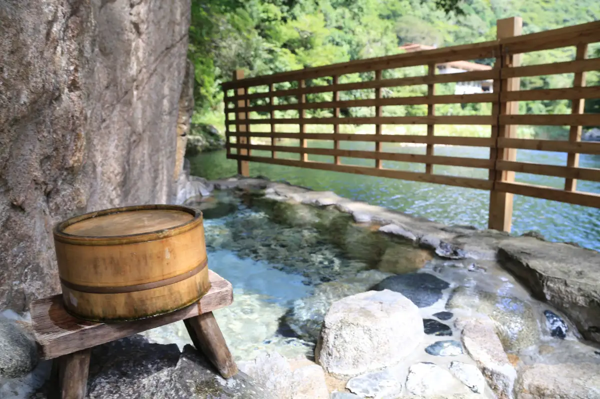
Stay
登録有形文化財の宿 名泉鍵湯 奥津荘
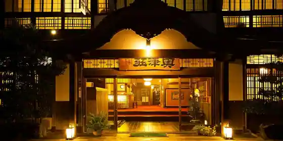
Toroku Yukei Bunkazai No Yado Meisen Kagi Yu Okutsu So
かなでや
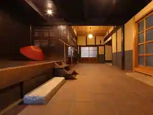
Kanadeya
Inn at Okutsu Onsen in Hade, Kagamino with open-air baths and a renovated traditional house.
奥津温泉 池田屋 河鹿園
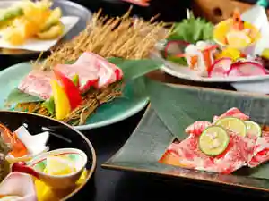
Okutsu Onsen Ikeda Ya Kajika Sono
Inn at Okutsu Onsen in Okutsu, Kagamino with free-flowing hot spring baths.
奇蹟の湯 奥津温泉 米屋倶楽部
Kiseki No Yu Okutsu Onsen Komeya Kurabu
Inn at Okutsu Onsen in Okutsu, Kagamino with open-air baths.
ＳＴＲ ｒｉｎｄｏ
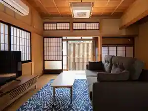
STR rindo
さいの郷「椛」
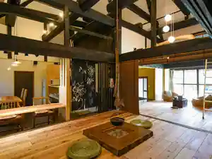
Saino Sato (Kaba)
Inn in Uesaihara, Kagamino with one group per day and a renovated traditional house.
Dining
そば処秀峰
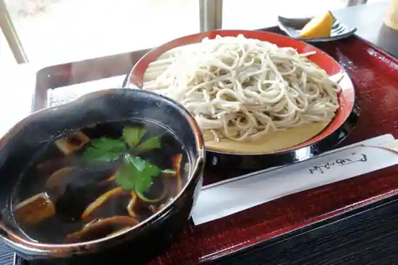
Soba Tokoro Shuho
中華そば じなんぼう
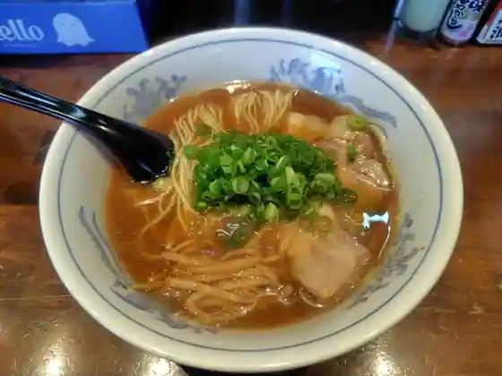
Chuka Soba Jinanbo
聖萬堂
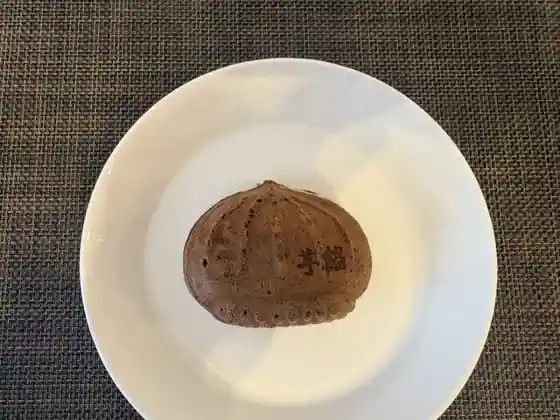
Hijiri Man Do
山田養蜂場お菓子工房 ぶんぶんファクトリー
Yamada Yoho Ba O Kashi Kobo Bunbun Fakutori
四川料理 天府苑
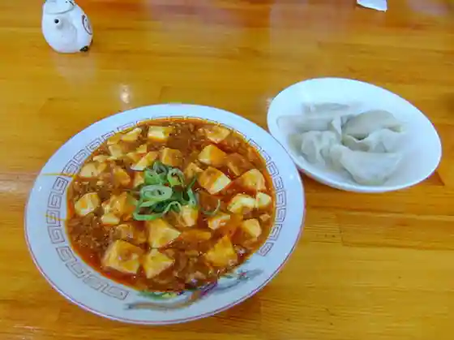
Shisenryori Fu En
奥津荘
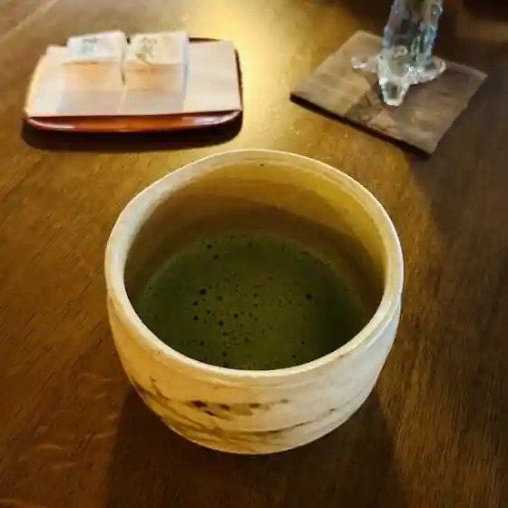
Okutsu So
いっぷく亭
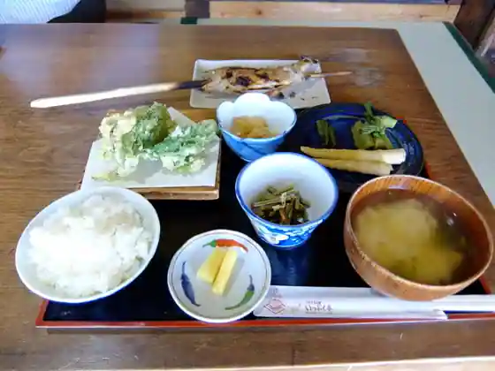
Ippuku Tei
パティスリーワカナ
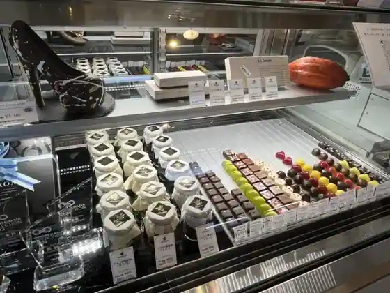
Pateisuriwakana
ふるさと物産館
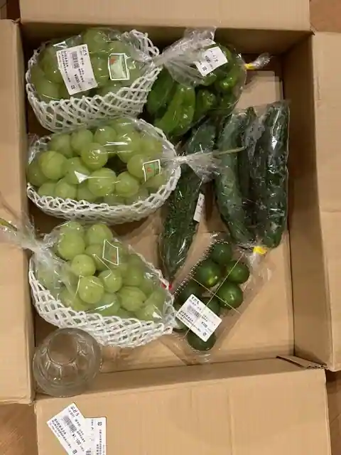
Furusato Bussan Kan
うどん坊 かがみの
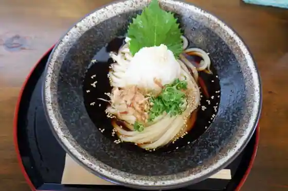
Udon Bo Kagamino
パン・パパン
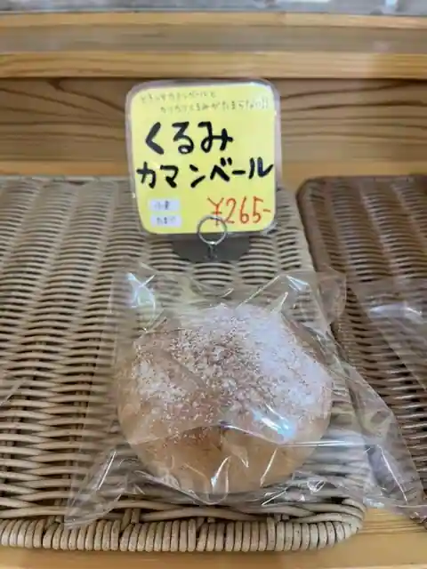
Bakery Pa Bakery
あそこ お食事処
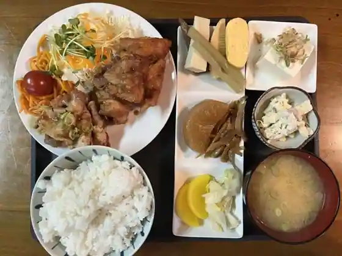
Asoko O Shokuji Tokoro
Cafe 多夢多夢
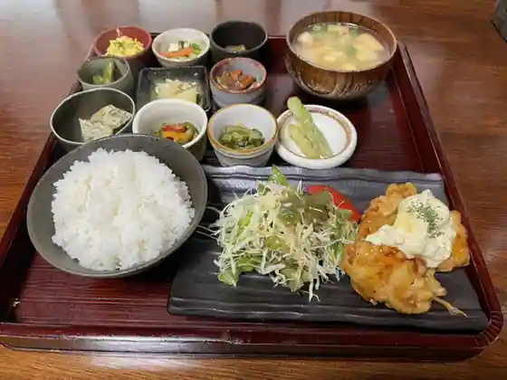
Cafe Ta Yume Ta Yume
年岡店tomo
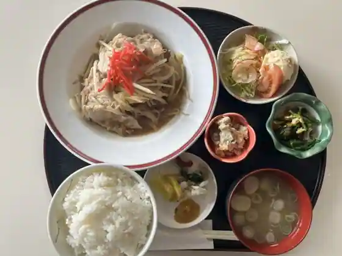
Nen Oka Mise tomo
キッチンかわせみ
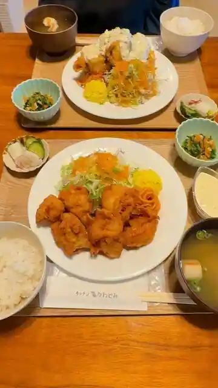
Kitchen Kawasemi
十割蕎麦 いず美
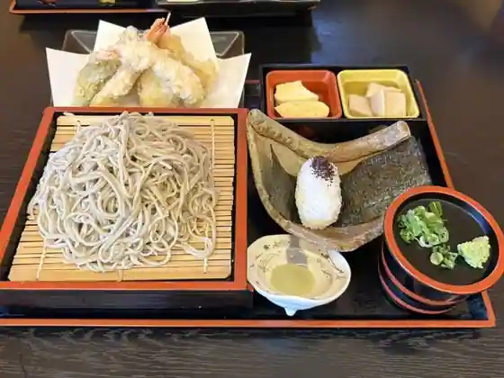
Ju Wari Soba Izu Bi
苫都
Toma Miyako
山田養蜂場 みつばち農園
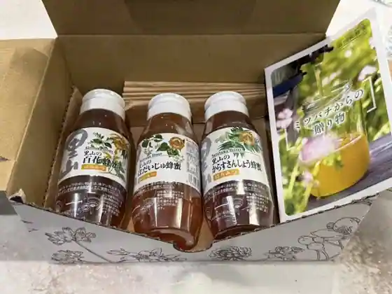
Yamada Yoho Ba Mitsubachi Noen
花味庄屋
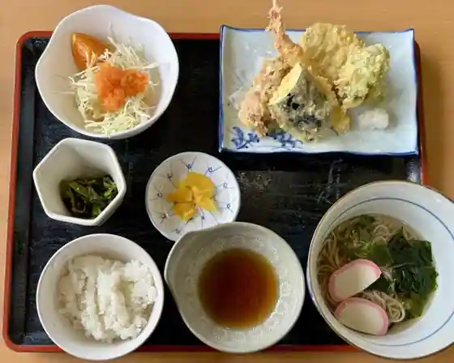
Hana Aji Shoya
MOM's CAFE
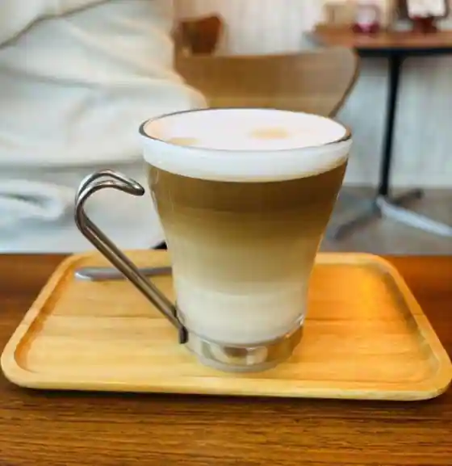
MOM's CAFE
食事処 のとろ館
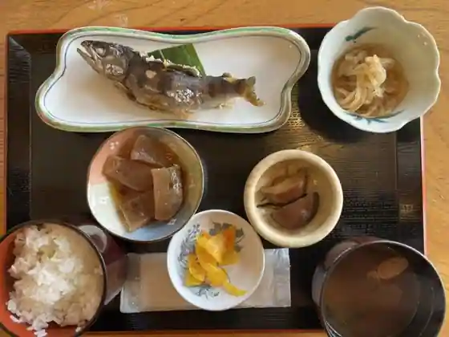
Shokuji Tokoro Notoro Kan
つるや 鏡野店
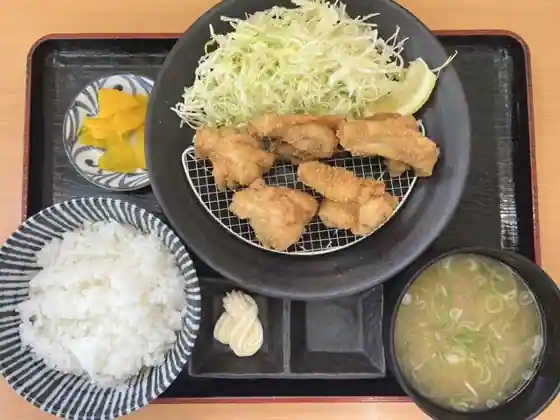
Tsuruya Kagamino
COHAN
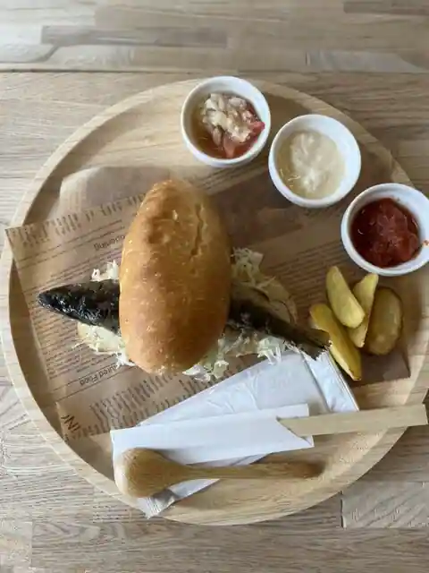
COHAN